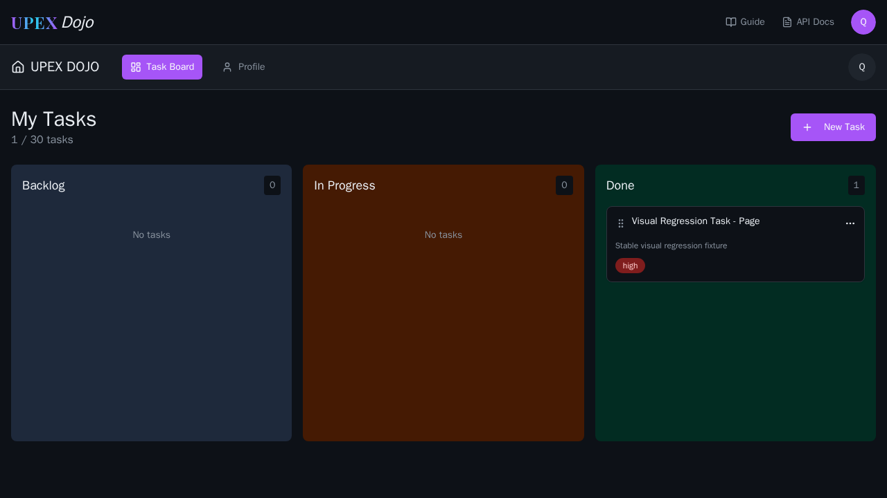
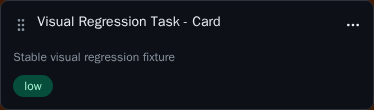

Controlled state
Test data and authenticated application state are established deterministically before screenshot capture.
Capability 04
Deterministic Playwright screenshot comparison against approved, version-controlled baselines in a controlled Linux rendering environment.
Engineering responsibility
Functional assertions verify behavior. Visual regression adds a separate quality boundary that detects unexpected rendering changes against explicitly approved baselines.
Test data and authenticated application state are established deterministically before screenshot capture.
Expected snapshots are version controlled with the canonical visual specification.
Current rendering is compared against the approved baseline and unexpected differences fail the gate.
Execution flow
Visual coverage does not depend on manually prepared application state.
Create controlled task state.
Prepare application data.
Open stable target state.
Take deterministic screenshot.
Evaluate approved baseline.
Baseline 01
The full-page baseline represents the authenticated dashboard after deterministic task data has been created.

Baseline 02
Component-level comparison provides a smaller visual boundary when full-page comparison would add unnecessary noise.

Comparison stability
The comparison configuration suppresses browser behavior that would create unnecessary visual instability.
Baseline ownership
CI compares against approved snapshots. It does not automatically accept new rendering simply because the application changed.
Implementation representation
The source-of-truth visual implementation and approved baselines remain in the canonical framework. The public repository exposes reviewed evidence and architecture without maintaining a second visual implementation.
Real execution
The published report comes from the real canonical visual-regression execution in the controlled Linux environment.